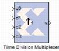

|
|
The Xilinx Time Division Multiplexer block multiplexes values presented at input ports into a single faster rate output stream.The block has two to 32 input ports and one output port. All input ports must have the same arithmetic type, precision, and rate. The output port has the same arithmetic type and precision as the inputs. The output rate is nr, where n is the number of input ports and r is their common rate. The block also has optional ports vin and vout that specify when input and output respectively are valid. Both valid ports are of type Bool.